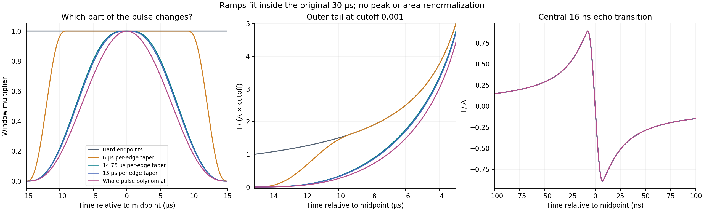
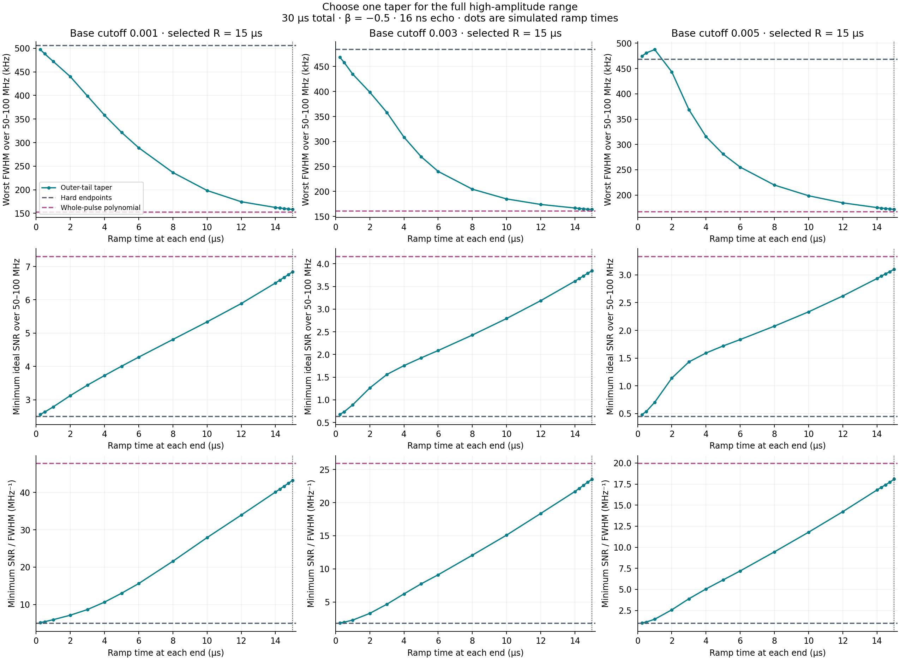
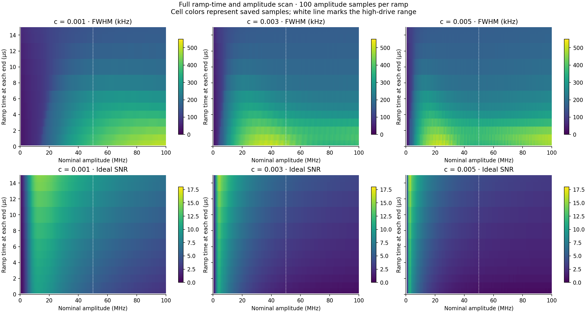
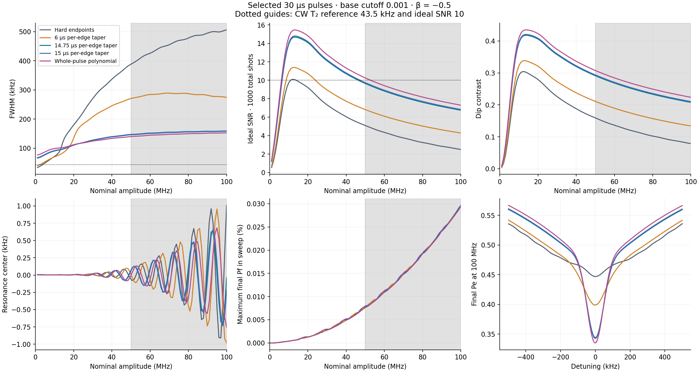
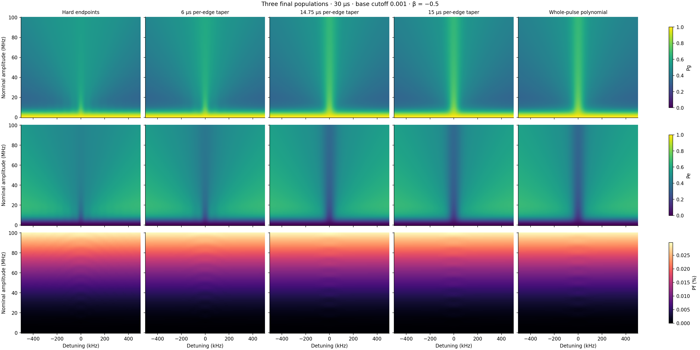
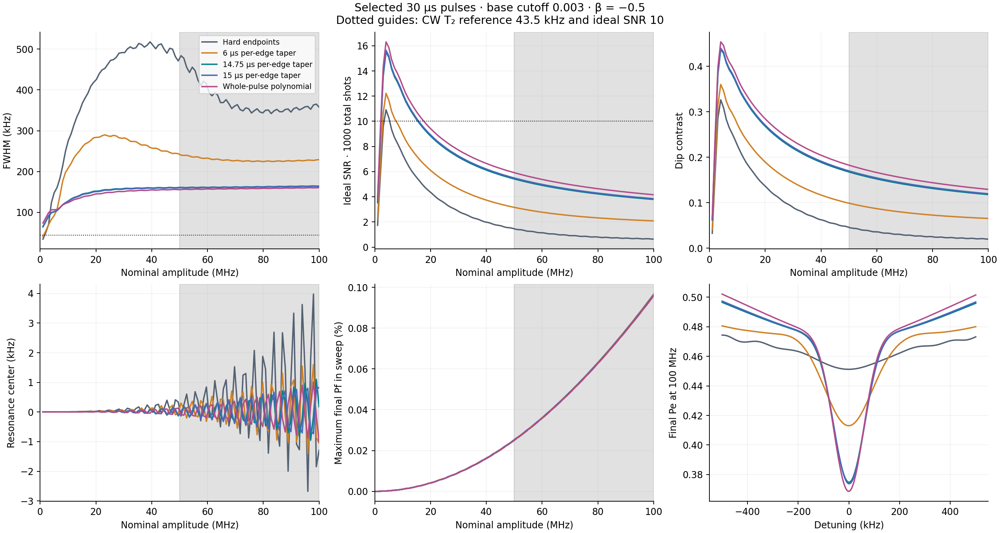
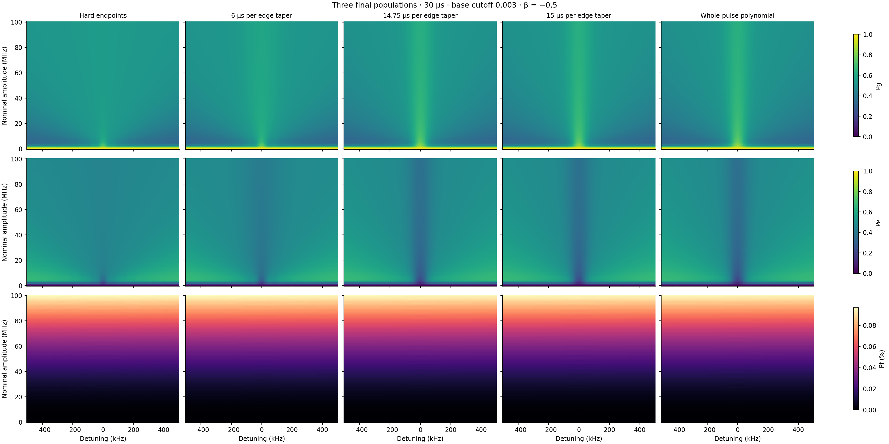
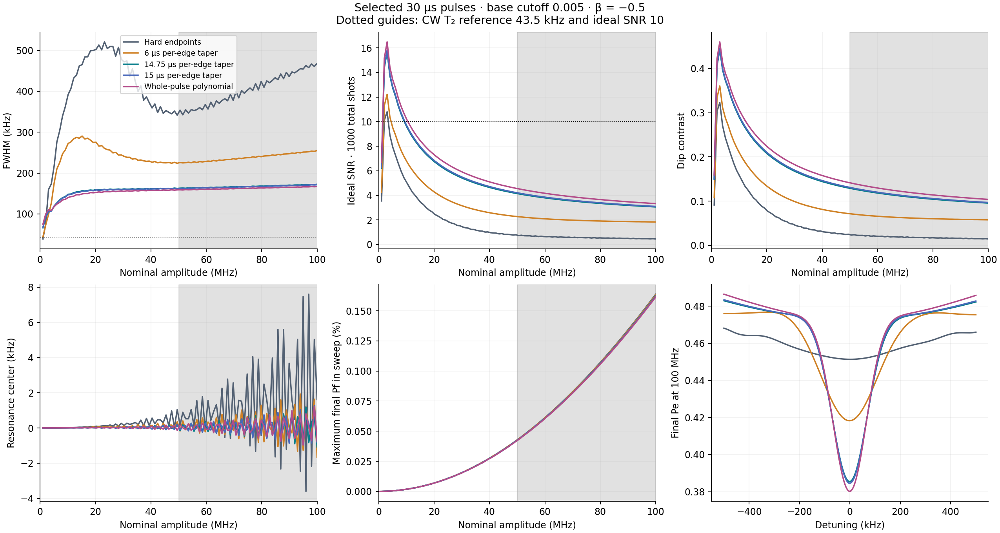
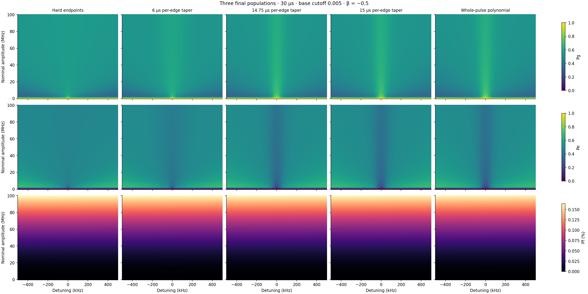

THREE-LEVEL SIMULATION · 30 µs · 100 AMPLITUDES TO 100 MHz
How much outer-tail taper is useful?
The best sampled taper by the stated high-drive score at cutoff 0.001 uses 15 µs at each end. At 100 MHz it gives 158.2 kHz FWHM and ideal SNR 6.84; the whole-pulse polynomial gives 152.9 kHz and SNR 7.30. This taper leaves only 0 µs of the central envelope untouched, so the preferred ramp is not confined to a short outer tail. The best tested taper with a strictly untouched central segment uses 14.75 µs per edge, leaving 0.5 µs unchanged. The sampled 14.5, 14.75, 15 µs ramps lie within 5% of the best taper score. Across all three cutoffs, the polynomial has both a smaller worst-case linewidth and a higher minimum SNR than the best taper over 50–100 MHz. The proposed short outer-tail taper does not improve on it in this scan.
What was scanned
Quintic turn-on and turn-off ramps inside the same 30 µs pulse:
w(u)=10u³−15u⁴+6u⁵, with u from zero at the endpoint to one at the ramp join.
The central 30−2R µs retains the original root-Lorentzian envelope. Value, first derivative
and second derivative vanish at the outer endpoints. R=15 µs is a whole-pulse limiting taper.
Base cutoffs 0.001, 0.003, 0.005; β=−0.5; sine midpoint transition 16 ns;
α=−216 MHz; T₁=51.24 µs; T₂=7.31 µs. Nominal amplitude: 100 uniformly spaced samples
from 0 to 100 MHz. Detuning: −0.5 to +0.5 MHz, 201 points. RK4 timestep 0.5 ns.
DRAG uses the derivative of the complete windowed I envelope. No renormalization.
All ramp times are per edge. Hard endpoints and the previous whole-pulse polynomial
w(t)=[1−(2t/L)²]³ are controls. Matched prior arrays were reused after checking parameters,
grids and simulation source hashes.

How “best” is defined
Choose one fixed ramp for the entire high-drive range:
maximize the minimum SNR/FWHM over the 50 sampled amplitudes from 50.5 to 100 MHz.
An invalid dip at any of these points disqualifies the candidate. This is an explicitly chosen
sharpness heuristic, not a fitted frequency uncertainty or a universal optimum.
We also report the narrowest ramp, the highest-SNR ramp and non-dominated width/SNR choices.
The full 0–100 MHz response is retained; the zero-drive point has no resonance signal.
SNR assumes 1000 independent ideal binary Pe shots: 500 at the dip center,
250 at each of ±450 kHz. Technical noise, readout errors and center-search overhead are absent.
The 200 kHz/SNR 10 targets are illustrative, not user-specified hard requirements.

Selected ramp by each criterion ·
Every ramp and Pareto flags
At 100 MHz and across 50–100 MHz
The entire scan

Cutoff 0.001: selected pulses

Three population maps

Cutoff 0.003: selected pulses

Three population maps

Cutoff 0.005: selected pulses

Three population maps

Interpretation and reproducibility
Widths are nearest half-depth crossings after a linear background fit at |detuning|≥400 kHz.
Centers use quadratic interpolation of the raw central minimum. No Gaussian fit or smoothing
is used. The finite measurement window affects the reported widths. The 43.5 kHz line is the
weak-drive CW reference 1/(πT₂), not a universal lower bound on echo-dip FWHM.
Final Pf is not maximum transient leakage. The model omits higher transmon levels,
drive-line distortion and experimental noise. A best sampled quintic ramp does not establish
an optimum over all possible pulse shapes. Ramps were not optimized separately at each amplitude.
All metrics · Parameters and source hashes
· Pulse areas
Refined selected ramps at three high amplitudes: maximum FWHM change 8.8 Hz on halving dt and 115.5 Hz on halving the detuning step. Numerical and area controls.
At 100 MHz the polynomial is narrower and higher-SNR than the selected taper for all three cutoffs and all five tested reference shoulders (±0.3, ±0.45, ±0.6, ±0.8, ±1.0 MHz).
Wider-frequency and shoulder-placement checks
All population arrays and parameter checks
Software and data checks, with limitations